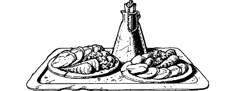

40
Aided by your Sixth Sense, you hear the third tumbler click into position. 5 There is a soft whirring sound, and then the door swings open to reveal a vaulted corridor which leads to a flight of iron steps. You enter, and the great door swings shut behind you. There is a junction halfway along the corridor where another passage crosses from left to right. You hurry across and climb the metal steps, but as you are approaching the top of the stairs, you catch a glimpse of two armoured guards beyond. They are standing to attention before a large door that is engraved with mystic symbols. You feel a strong concentration of evil here and, at once, you sense that the Runes of Agarash lie on the other side of this door. Instinctively you duck below the guards’ line of sight, and then quietly you retreat to the junction.
Here you detect the sound of footsteps approaching, and when you spin around to face them, you see a young kitchen attendant walking along the passageway towards you. He is carrying a tray laden with food and he stops abruptly when he sees you suddenly appear. Fearful that he may raise the alarm, you stride towards him and say in an accusing tone: ‘Why are you late, boy? Lord Vandyan has been kept waiting more than an hour for his food!’
‘But … but this is not for his lordship,’ answers the young man, clearly confused by your rebuke. ‘It’s for the guards at the door to the Rune Hall.’
‘What!’ you reply, feigning outrage. ‘You mean to say that you would put the feeding of two lowly guards before our master’s needs! This is intolerable!’
‘No … no … I mean, I was told by the cook to take this tray to the guards. Lord Vandyan ate a meal in his chambers some three hours ago. I’ve had no order to take him food since.’
‘Well, our master is hungry,’ you reply, ‘and you’d better go back to the kitchen and find him something suitable to eat this instant … if you value your hide, that is!’
Forcefully you snatch the tray from the bemused assistant, saying: ‘Go tell cook to prepare him something substantial, understand? He’s very hungry. I’ll deliver these scraps to the guards myself.’ The confused young assistant scratches his head and then he hurries away to deliver your order to the cook. You watch him until he turns a distant corner, and then you look down at the tray of cold meat and vegetables and an idea takes shape, an idea that may help you gain entry to the Rune Hall.
{kind=link}

If you possess a Potion of Gallowbrush and you wish to use it, turn to 87.
If you possess a Graveweed Concentrate and you wish to use it, turn to 195.
If you possess a Potion of Mokradon and you wish to use it, turn to 327.
If you possess a Potion of Volzoc and you wish to use it, turn to 169.
If you possess some Ghilev and you wish to use it, turn to 271.
If you possess none of these, or if you should choose not to use any of them, turn to 31.
Footnotes
[5] This is the correct answer to the combination lock in Section 297.